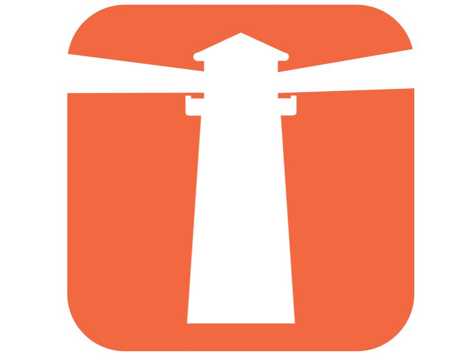

Lighthouse is a web application utilizing GPT-3's capabilities to help refugee's entering into the United States. The website offers resources to find immediate needs (food and shelter), aquiring proper documentation, and becoming independent (finding a job, school, etc). The website is easily navigatable and fully avalible in English, Spanish, Arabic, and Ukranian. The website is connected to GPT-3 using a makeshift api built on a webhook calling GPT for Sheets.
This was a group project with two of my mentees. I lead all development and research.

AltruiSMS is a SMS chatbot paired with a web application to help homeless and low-income people find resources they need (no wifi needed!). The web application served as a registration portal for shelters and organizations holding welfare distribution events.
The chatbot is a wifi-independent user interface capable of providing people with the adress and directions to their nearest shelter, as well as a notification system to let them know when supplies they need are avalible nearby.
This was a group project, I created the chatbot and all of its functionalites
August 2022
Power Outage Hub
The power outage hub was designed for a client of IBM, the goal of the project was to improve the client's customers experience. I built out a django webapp with internal and external facing dashboards. The client facing (external) dashboard consisted of saftey informaiton, a radar, and a map of outages in the clients area. The internal dashboard was executive facing and consisted of customer care and power outage KPIs. The app was built with Django, deployed through Docker and kubernetes, and utilized IBM Cloud services such as cognos, dashboards, and watson assistant.
The code is not public as it includes client data
November 2022
SiFT: Simple File Transfer
SiFT v1.0 is server/client file transfer system with end to end encryption (incluing integrity and replay protection). The system was built out entirly in Python using the PyCryptodome library for AES and RSA encryption. The system has 5 protocols: login, commands, upload, download, and message transfer. The message transfer protocol uses AES in GCM mode for encryption. The AES key is created by encrypting a temporary key with RSA-OAEP.